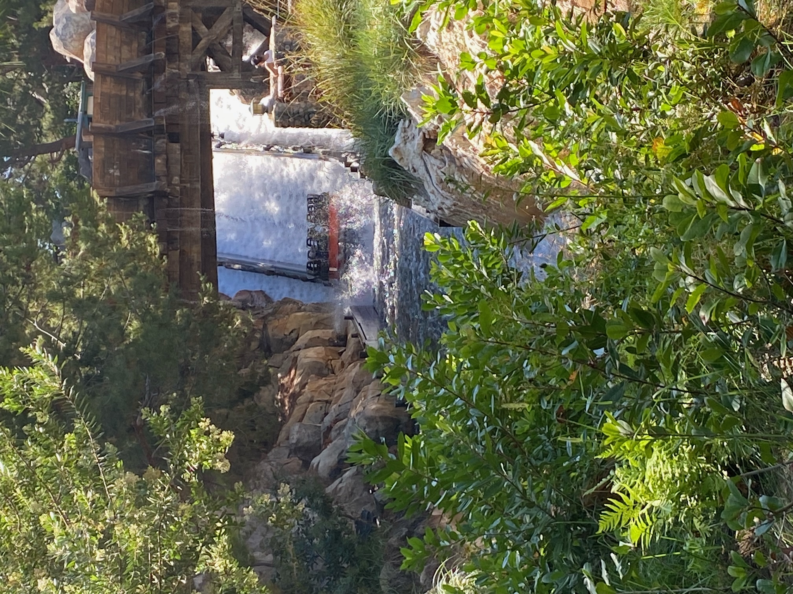
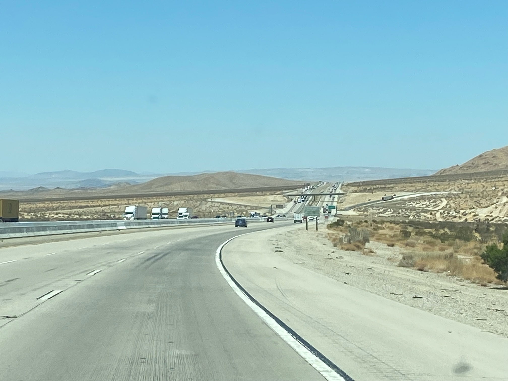
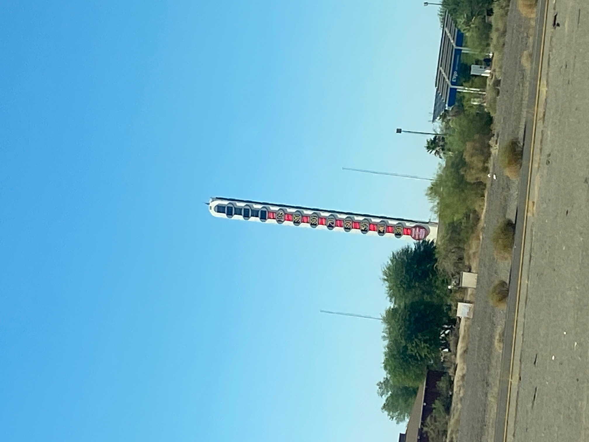
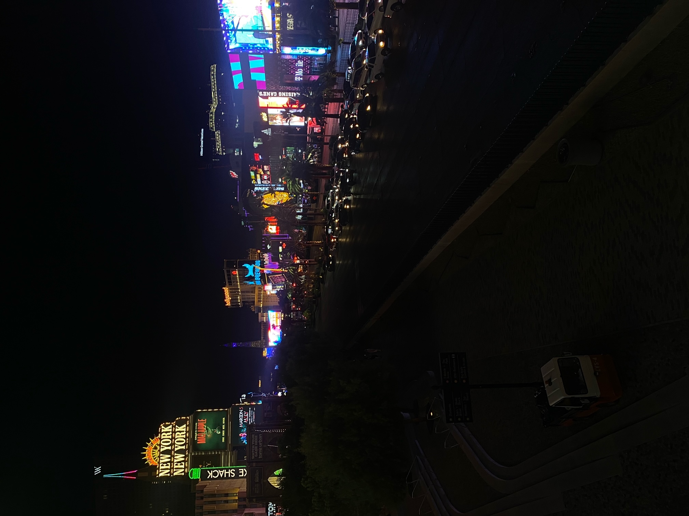

We got up early to try to get to Disney as it opened. We aimed for a 6:20 set off but in honour of Stitch we left 6 minutes late. The traffic wasn’t great but it gave me the opportunity to “do a Corden” and drive in the carpool lane. For the good of my passengers, I didn’t sing along with the radio.
The ride in California Adventure Park that we most wanted to do was the fast car one. It was shut as we arrived and then had a 150-minute queue. We weren’t THAT bothered. Soarin’ Around The World was closed last week, so went there instead. We remembered it as an amazing experience (is it a “ride”?) the first time from over 10 years ago, but technology has moved on. It is still good, but no longer amazing and I can’t unsee the inappropriate curvature on the Eiffel Tower.
Given Goofy broke last time we queued, we went back and it was almost walk-on at 8:30am. It was like the mouse ride at Blackpool but smoother and less scary. Good fun. We really enjoyed Incredicoaster the first time so rode that again. Still incredible!
Jonathan had recommended the rapids ride, so we walked to that corner of the park. We got on with some Americans, so after the 5-minute ride, we now know their life story. It was the best rapids ride we’ve ever been on. Disney know how to do it right, with lots of splashing but only a bit of getting wet, and some actual drops.

We bought a few bits and bobs in Downtown Disney and back to the car. Theme park summary: 4 days of Disney was about right and all beautifully organised, themed and laid out. The Magic Bands added to the experience and I only have positive things to say. The price is high but you get what you pay for. 2 days of Universal was about right too and close behind Disney for experience and ride quality, but probably better value. We needed to know about Six Flags. And now we know.
My next job was to get the car to Vegas. The first clear bit of Freeway said “avoid overheating - no aircon for next 15 miles”. That would have been impossible but we turned it down and I watched the engine temperature all the way up the hill. All good.
The drive was like the Cars ride, only in real life, as per Alison’s photo…

Freya needed a wee stop, so more Denny’s and there was an outlet village. That was outdoors so I had to actually go in some shops to cool down. The girls had fun. Jake liked some McLaren bags. We set off on the next part of the drive, which included going past the World’s Tallest Thermometer. The car was saying 45C but the thermometer was showing “only” 43C.

We arrived into Vegas and the satnav took us to exactly to the right spot. After a bit of waiting, we checked in. I stupidly took the upgrade to better rooms to allow us to be on the same floor, which took us out of the pyramid and into the adjacent tower. Great rooms though.
After a brief rest, we got an Uber to Fremont street. Jake and Freya couldn’t process the experience. And, frankly, neither could I. The street was heaving and we didn’t know where to look. Freya couldn’t believe the rest of us hadn’t seen the female stripper on the frozen cocktail bar, but we had been variously looking at the Chippendales, a DJ in bra and pants hula hooping and the mile-long screen in the ceiling. In turns out there were female strippers on frozen cocktail bars every 300 feet.
I know I keep talking about the heat. I will say that 40C at 10pm feels worse than 45C at 2pm. When is the time to cool down? We walked up and down Fremont Street a few times, watched a ceiling show on the hour, had frozen treats from McDonalds, then got an Uber back to New York New York so the kids could see some of the strip at night.

Jake was very excited when he saw a self-driving Ionic 5. And I’ve just seen it again out of the hotel window right now (slowing down more than a human would at the pedestrian crossing). We wandered round the hotels at night, looked around the Hershey’s vomit-flavoured chocolate shop and took pictures of the big green woman.
We got back to our rooms very tired. I didn’t sleep brilliantly as my brain was still trying to process more than my brain can absorb in 24 hours.